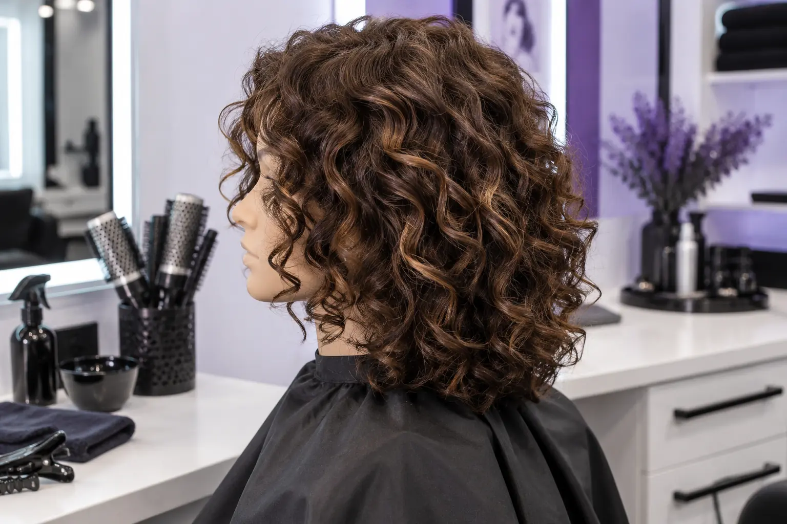

Garbanotų plaukų kirpimas: natūrali tekstūra, susitraukimas ir vizito ruošimas
Autorius: Madbeauty redakcija · Numatyta 2026 m. spalio 20 d. 16:00 (Lietuvos laiku)
Sužinokite, ką aptarti dėl garbanų formos, sauso ar drėgno kirpimo ir kaip pasiruošti vizitui.

Garbanotų plaukų kirpimą planuokite pagal tai, kaip norite nešioti plaukus kasdien. Drėgnų, ištemptų ir įprastai suformuotų garbanų ilgis bei kritimas gali atrodyti skirtingai, o susitraukimas kiekvienam žmogui nevienodas. Prieš pradedant darbą sutarkite, kada ir kaip bus vertinama jūsų plaukų forma, ir paprašykite paaiškinti, kaip bus tikrinamas galutinis ilgis.
Ką reiškia sausas ar drėgnas kirpimas?
Paslaugos pavadinimas pats savaime nepasako, kokiu būdu bus kerpama. Plaukai gali būti kerpami sausi, sudrėkinti arba darbo metu vertinami abiem būdais. Renkantis svarbu ne vien metodo pavadinimas, o tai, ar kirpimo planas atitinka jūsų kasdienį garbanų formavimą ir norimą siluetą.
- Paklauskite, ar meistras prieš kirpimą apžiūrės jūsų garbanas taip, kaip jas paprastai nešiojate.
- Paprašykite paaiškinti, kaip bus sprendžiama, kiek ilgio trumpinti ir kaip forma bus patikrinta plaukams išdžiūvus.
- Jei siūlomi keli etapai, išsiaiškinkite, ką kiekviename jų meistras vertins ir ką gali koreguoti.
Trumpa pasiruošimo kortelė
Prieš vizitą užsirašykite kelis dalykus, kad norimą pokytį būtų lengviau aptarti. Nuotraukos gali padėti parodyti kryptį, tačiau jos nepatvirtina, kad jūsų plaukai susiformuos visiškai taip pat.
- Kaip paprastai nešioju garbanas ir kokius formavimo įpročius turiu.
- Kokios formos noriu: daugiau ar mažiau apimties, aiškesnio kontūro ar tik nedidelio pokyčio.
- Kokio ilgio nenoriu prarasti ir kurias vietas svarbu išsaugoti.
- Kas man patiko ar nepatiko per ankstesnius kirpimus.
- Savo plaukų nuotrauka įprastai suformuotų garbanų ir viena ar dvi įkvėpimo nuotraukos.
Dar prieš atvykdami pasiteiraukite, ar plaukai turi būti švarūs, sausi ar paruošti kitaip. Atvykimo instrukcija gali priklausyti nuo konkretaus kirpimo plano, todėl vienos taisyklės visiems vizitams netaikykite.
Ką aptarti konsultacijos metu?
Paaiškinkite, kaip norite prižiūrėti ir formuoti plaukus kasdien, kokį pokytį įsivaizduojate ir kokio rezultato nenorite. Tada paprašykite meistro savo žodžiais nusakyti planą: kaip bus vertinama garbanų forma, kada bus trumpinamas ilgis ir kaip prieš užbaigiant bus patikrinta sausa forma. Jei atsakymas neaiškus, paprašykite parodyti, kokią plaukų dalį ketinama trumpinti.
Platesnį paslaugos pasirinkimo kontekstą rasite gide „Kaip pasirinkti kirpimą: plaukų tekstūra, veido forma ir vizito eiga“. Jei jau ieškote paslaugos, galite pradėti nuo nacionalinės kategorijos
Kirpimas. Joje miestą pasirinkite aiškiai. Kategorija nepatvirtina, kad pasirinktoje vietoje yra teikėjų ar laisvų laikų.
Planuojamos vidinės nuorodos
Šaltiniai peržiūrai
- Level 2 Hair Professionals handbook: consultation, cutting, styling and glossary — Read Unit203/204 factors, and glossary pp93–97: outline versus layered/graduated lengths, density/texture/growth, styling versus cutting. No single definition covers all bob/carré names; no guaranteed volume or maintenance result. This is published curriculum, not actual human stylist review.
- Curly and wavy hair: how drying changes the visible curl form — Read original professional interview on curl formation changing during drying and scrunching. Supports a bounded observation that visible curl length/form may differ, not a percentage, dry-cut superiority or washing protocol. Omit timings, heat settings and product claims.